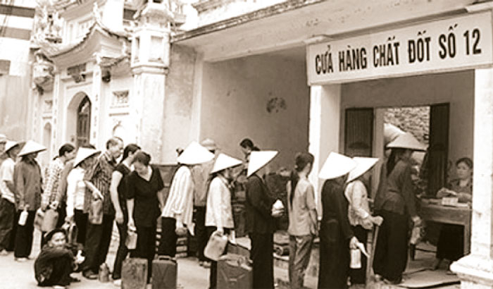
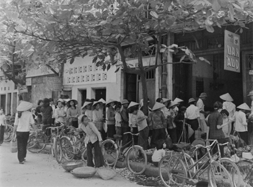

Nhớ về thời mua hàng bằng tem phiếu thời bao cấp
Ngày nay, hàng hóa phong phú, thực phẩm dôi dư nên ít người suy nghĩ về chuyện ăn như thời bao cấp. Khi tôi kể lại chuyện cũ, mấy đứa con tôi ngồi nghe mà mắt tròn mắt dẹt.
Sau ngày đất nước thống nhất, cán bộ, công nhân viên đều hưởng lương và phụ cấp lương thực, nhu yếu phẩm. Lương khởi điểm là 36 đồng, hàng hóa được phân phối theo tiêu chuẩn. Vì vậy, đồng tiền tuy ít nhưng hàng hóa đều được bán ra với giá bao cấp, rất rẻ. Và, cuộc sống như vậy vẫn chấp nhận được so với người nông dân lao động thời ấy.
Năm 1980, vợ chồng tôi đều là cán bộ, công nhân viên nên có tiêu chuẩn tem phiếu. Để có được thực phẩm tươi bồi dưỡng cho vợ lúc sinh con, sau khi gom 3 tháng đủ tem 4 kg thịt của hai vợ chồng, 4 giờ sáng chủ nhật hôm đó, tôi đạp xe đến cửa hàng để xếp hàng nộp sổ. Cửa hàng còn đóng cửa im ỉm. Ai đến trước cứ úp sổ xuống nền, xếp chồng lên rồi lần lượt đến người kế tiếp, trên cùng là hòn gạch đè. Tất cả ngồi chờ, lâu lâu liếc xem cuốn sổ còn nằm đó hay không.
7 giờ sáng, cửa hàng mở cửa, chồng sổ được đưa vào bàn lật ngược lên, sổ dưới thành nằm lên trên và bắt đầu bán hàng. Mọi người cứ nôn nao hỏi, cô bán hàng vừa nhanh tay đưa chiếc dao to bản sáng choang lên “phập” xuống khúc xương, vừa nói: “Chờ nhá! Đừng hỏi nhiều. Đến lượt sẽ gọi tên!”.
Tôi, phần thì đói bụng, nóng ruột chờ đợi, vì nếu bỏ đi, khi đến lượt gọi tên không có coi như qua đến tuần sau mới mua được. Sổ tôi nộp xếp thứ 6 nhưng đến hơn 10 giờ mới nghe xướng tên. Sau khi đưa các tem cộng lại thành 4 kg thịt, cô bán hàng phán một câu: “Hết thịt, còn xương, quy đổi 2 kg xương bằng 1 kg thịt nhá!”. Tôi đành chấp nhận bỏ vào giỏ xách mang về. Má tôi hăm hở mở ra nhìn, tay lật đảo mấy miếng xương nói: “Thôi cũng được, có còn hơn không, lóc ít thịt nạc kho tiêu, còn xương nấu rục với đu đủ để mẹ nó ăn cho có sữa”. Cuốn sổ gạo hồi đó quý hơn vàng. Nếu mất sổ gạo là coi như mấy tháng sau phải nhịn ăn để chờ lên tỉnh cấp sổ mới. Thấy ai đó buồn bã về chuyện gì, anh em thường giễu nhau câu: “Mặt lơ ngơ như mất sổ gạo”. Do vậy, cuốn sổ gạo được mọi người bảo quản, cất vào rương khóa kỹ như báu vật, có người còn ép ni lông, kẹp vào bìa cứng bọc ngoài để giữ gìn.
Việc mua gạo không phải dậy sớm, xếp hàng nộp sổ như mua thịt cá, vì hàng ngày cửa hàng đều bán. Thường thì sau khi tôi đẩy bao gạo về nhà, vợ tôi mở bao đổ gạo ra nia để sàng sảy. Nửa phần dưới gạo đã vón cục, mọt đen bay lên bám đầy người. Khi vo gạo để nấu, bóp nhẹ tay để hạt gạo không tan ra bột, gạt bớt phần gạo nổi bỏ đi để nấu cho heo. Nồi cơm khi nấu lên độn thêm mì lát hoặc khoai lang khô mà mùi gạo mọt cứ còn hăng hắc.
Câu hỏi đặt ra là các nhà bán lẻ trực tiếp tham gia bán hàng trực tuyến có gặp khó khăn gì không? Ông Đỗ Quốc Huy chỉ ra một số khó khăn, trong đó, vướng mắc lớn nhất là yêu cầu chuẩn hóa sản phẩm và cách đón nhận của người tiêu dùng. Nhà bán lẻ muốn tham gia thị trường kinh doanh trực tuyến thì phải đầu tư để chuẩn hóa quy cách sản phẩm, chuẩn hóa nền tảng bán hàng online và khâu logistics, hậu cần. Đơn cử việc chuẩn hóa, đến nay hầu hết mặt hàng thực phẩm tươi sống kinh doanh tại siêu thị như thịt, cá, tôm, rau củ, trái cây… đều chưa được chuẩn hóa về trọng lượng và quy cách.
Những năm sau này, đất nước đổi mới, xóa bỏ bao cấp, nguồn lương thực sản xuất theo chế độ khoán, hàng hóa được sản xuất nhiều và giá cả dần bình ổn. Theo đó, các công ty lương thực, công ty thương nghiệp cũng lặng lẽ giải thể và các loại tem phiếu, sổ gạo cũng lui dần vào quá vãng.
Ngày nay, khi bưng chén cơm trắng, miếng thịt ngon, đi chiếc xe máy là chuyện nhỏ của mỗi gia đình. Đôi lúc nghĩ đến thời “cổ tích” ta càng thấy thấm thía với những lớp người đã sống và làm việc trong thời kỳ bao cấp “gạo mọt, thịt chờ” nhưng vẫn ung dung, vui vẻ làm việc hết mình.
Xếp hàng cả ngày
Những năm 80 của thế kỷ trước, tùy thuộc vào vị trí công việc, đặc thù nghề nghiệp mà cán bộ, công chức nhà nước cũng như người dân lao động được phát tem phiếu mua lương thực, thực phẩm với chế độ riêng.
Cán bộ cao cấp hưởng tiêu chuẩn đặc biệt A1; phiếu A dành cho bộ trưởng; thứ trưởng phiếu B; trưởng các cục, vụ, viện được hưởng phiếu C và có các cửa hàng phục vụ riêng tại phố Tông Đản, Nhà Thờ, Vân Hồ (Hà Nội)… Lúc bấy giờ dân gian có câu Tông Đản là của vua quan/ Nhà Thờ là của trung gian nịnh thần/ Đồng Xuân là của thương nhân/ Vỉa hè là của nhân dân anh hùng.
Thiếu niên Hà Nội thời bao cấp như anh Nhân ngoài đi học còn có nhiệm vụ đặt gạch ghi tên, xếp hàng giữ chỗ mua gạo, rau, thịt, cá cho bố mẹ. Tem phiếu, sổ gạo trở thành nguồn sống của mỗi gia đình, chẳng may bị móc trộm thì đói cả tháng. Mỗi lần mua hàng xong, mẹ anh Nhân lại bọc hai thứ ấy bằng mấy lượt nylon rồi cất kỹ trong buồng hoặc bỏ vào hòm khóa lại.“Tôi thật khâm phục Bộ Nội thương thời ấy nghĩ ra ma trận tem phiếu cho người dân, nào phiếu vải, phiếu đường, phiếu dầu, phiếu củi…”, anh Chu Quảng Nhân (43 tuổi, ở Trần Xuân Soạn, Hai Bà Trưng, Hà Nội) nhớ lại.
Anh Nhân hay đùa rằng lứa 7X lớn lên thời ấy là “thế hệ lùn đi vì gánh nước”. Cậu bé Nhân hơn 10 tuổi sau giờ học là ba chân bốn cẳng chạy về lấy thùng sắt tây đi hứng nước sạch phân phối ở vòi công cộng đầu phố. “Thời ấy, xếp hàng lấy nước là cả một nghệ thuật, miệng thì cười toe toét nói chuyện với lũ bạn, chân thì đá cái thùng của mình lên trước để lấy cho nhanh”, anh kể.
Ngày nào mất nước là hàng dãy thùng xếp ngay ngắn trên phố để “xí” chỗ mà không thấy người đâu, nhưng chỉ cần có nước là ngay lập tức đông như chợ vỡ. Ai để thùng mà không có mặt là bị chen ngang. Cảnh xếp thùng lấy nước có khi từ mờ sáng hôm trước đến nửa đêm hôm sau. Vòi nước công cộng đông nghịt người là nơi vo gạo, rửa rau của các bà, nơi tắm của cánh đàn ông và trẻ con.
Nhắc đến hai từ “bao cấp”, ông Nguyễn Xuân Thành ở 57A Hàng Bồ (Hoàn Kiếm) rùng mình nhớ lại cảnh xếp hàng cả ngày, đến đi tắm, đi vệ sinh cũng phải xếp. Nhà ông 8 người, chen chúc ở căn phòng 9,6 m2. Cả ngõ 12 hộ dân chung một khu bếp, đến giờ thổi cơm là ồn ào như chợ. Nhà đun bằng dầu, nhà nấu bằng mùn cưa, người quạt, người thổi, khói bốc mù mịt, nhóm được bếp thì mặt cũng ám đầy muội than, ho sù sụ vì khói.